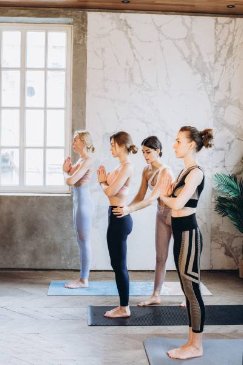
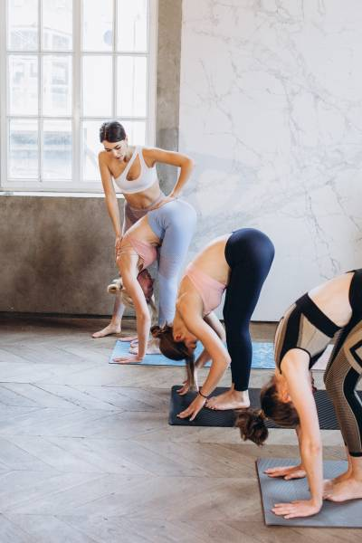
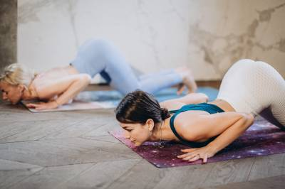

スーリヤ・ナマスカーラは、糖尿病などの心身の病気を管理し、心臓病のリスクを減らすのに優れた方法です。スーリヤ・ナマスカーラ（太陽礼拝）は、12の強力なヨガポーズの連続です。優れた心血管運動であるだけでなく、スーリヤ・ナマスカーラは身体と心に非常に良い影響を与えることでも知られています。スーリヤ・ナマスカーラのステップは、早朝の空腹時に行うのが最適です。太陽礼拝の各ラウンドは2セットで構成され、それぞれのセットは12のヨガポーズで構成されています。太陽礼拝の実践方法はいくつかのバージョンがありますが、特定のバージョンに固執し、定期的に実践することをお勧めします。良い健康の他に、スーリヤ・ナマスカーラはこの惑星での生命を支える太陽への感謝の気持ちを表す機会も提供します。
手順:
ステップ 1. プラナマサナ（祈りのポーズ）

マットの端に立ち、足を揃え、両足に均等に体重をかけます。胸を広げ、肩をリラックスさせます。息を吸いながら両腕を横から持ち上げ、息を吐きながら胸の前で手のひらを合わせ、祈りの姿勢を取ります。
ステップ 2. ハスタウッタナーサナ（腕を上げたポーズ）
息を吸いながら、腕を上げて後ろに反らせ、上腕二頭筋を耳に近づけます。このポーズでは、かかとから指先まで体全体を伸ばす努力をします。
このヨガストレッチを深めるためのヒント:
骨盤を少し前に押すと良いです。指先で上に伸びることを意識し、後ろに反ることは避けましょう。
ステップ 3. ハスタパーダーサナ（立位前屈）

息を吐きながら、腰から前に曲げ、背骨をまっすぐに保ちます。完全に息を吐きながら、手を足の横の床に下ろします。
このヨガストレッチを深めるためのヒント:
必要に応じて膝を曲げて、手のひらを床に下ろします。次に、膝をまっすぐにする努力を少しずつ行います。手をこの位置に固定し、シーケンスが終了するまで動かさないのが良いでしょう。
ステップ 4. アシュワ・サンチャラナアーサナ（馬術のポーズ）
息を吸いながら、右足をできるだけ後ろに押します。右膝を床に下ろし、上を見上げます。
このヨガストレッチを深めるためのヒント:
左足が手のひらの間に正確にあることを確認します。
ステップ 5. ダンダーサナ（スティックポーズ）
息を吸いながら、左足を後ろに持っていき、体全体を一直線にします。
このヨガストレッチを深めるためのヒント:
腕が床に垂直であることを確認します。
ステップ 6. アシュタンガ・ナマスカーラ（八部位の敬礼）

膝を床に優しく下ろし、息を吐きます。お尻を少し後ろに引き、前に滑らせて胸とあごを床に置きます。お尻を少し上げます。両手、両足、両膝、胸、あごの八部位が床に触れるようにします。
ステップ 7. ブジャンガーサナ（コブラポーズ）

前に滑らせて胸を持ち上げ、コブラポーズを取ります。このポーズでは、肘を曲げたままにして、肩を耳から離します。天井を見上げます。
このヨガストレッチを深めるためのヒント:
息を吸いながら、胸を前に押し出す努力を軽く行い、息を吐きながら、へそを下に押し出す努力を軽く行います。つま先を下に向けます。無理せず、できるだけ伸ばすようにします。
ステップ 8. アド・ムカ・シュヴァナーサナ（下向きの犬のポーズ）
息を吐きながら、お尻と尾骨を持ち上げ、体を逆さまの「V」字のポーズにします。
このヨガストレッチを深めるためのヒント:
可能であれば、かかとを床に付け、尾骨を持ち上げる努力を軽く行い、ストレッチを深めます。
ステップ 9. アシュワ・サンチャラナアーサナ（馬術のポーズ）
息を吸いながら、右足を両手の間に前進させます。左膝を床に下ろします。腰を押し下げて、上を見上げます。
このヨガストレッチを深めるためのヒント:
右足を両手の間に正確に置き、右ふくらはぎを床に垂直にします。この位置で、腰を床に押し下げる努力を軽く行い、ストレッチを深めます。
ステップ 10. ハスタパーダーサナ（立位前屈）
息を吐きながら、左足を前に持っていきます。手のひらを床に置きます。必要に応じて膝を曲げます。
このヨガストレッチを深めるためのヒント:
膝を優しく伸ばし、できるならば鼻を膝に触れるようにします。呼吸を続けます。
ステップ 11. ハスタウッタナーサナ（腕を上げたポーズ）
息を吸いながら、背骨を上に転がし、腕を上げて少し後ろに反らせ、腰を少し外側に押し出します。
このヨガストレッチを深めるためのヒント:
上腕二頭筋が耳の横にあることを確認します。上に伸びることを意識し、後ろに反ることは避けましょう。
ステップ 12. ターダーサナ（山のポーズ）
息を吐きながら、まず体をまっすぐにし、次に腕を下ろします。この姿勢でリラックスし、体の感覚を観察します。
これでスーリヤ・ナマスカーラのセットが完了します。ステップを繰り返してラウンドを完了します。ただし、今回はステップ4で左足を後ろに、ステップ10で右足を前に持っていくことから始めます。終了すると、スーリヤ・ナマスカーラの1ラウンドが完了します。
このビデオガイドを通じて簡単な手順でスーリヤ・ナマスカーラを試すこともできます: